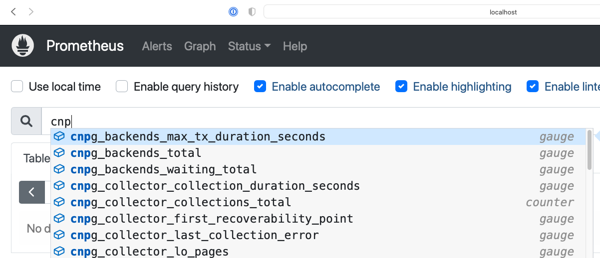
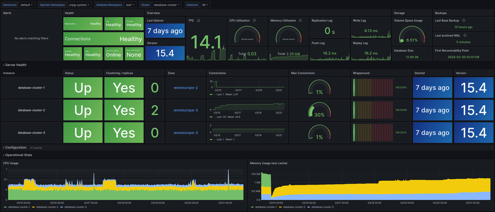

Quickstart
This section guides you through testing a PostgreSQL cluster on your local machine by deploying CloudNativePG on a local Kubernetes cluster using either Kind or Minikube.
Warning
The instructions contained in this section are for demonstration, testing, and practice purposes only and must not be used in production.
Like any other Kubernetes application, CloudNativePG is deployed using regular manifests written in YAML.
By following the instructions on this page you should be able to start a PostgreSQL cluster on your local Kubernetes installation and experiment with it.
Important
Make sure that you have kubectl installed on your machine in order
to connect to the Kubernetes cluster. Please follow the Kubernetes documentation
on how to install kubectl.
Part 1: Setup the local Kubernetes playground
The first part is about installing Minikube or Kind. Please spend some time reading about the systems and decide which one to proceed with. After setting up one of them, please proceed with part 2.
We also provide instructions for setting up monitoring with Prometheus and Grafana for local testing/evaluation, in part 4
Minikube
Minikube is a tool that makes it easy to run Kubernetes locally. Minikube runs a single-node Kubernetes cluster inside a Virtual Machine (VM) on your laptop for users looking to try out Kubernetes or develop with it day-to-day. Normally, it is used in conjunction with VirtualBox.
You can find more information in the official Kubernetes documentation on how to install Minikube in your local personal environment. When you installed it, run the following command to create a minikube cluster:
minikube start
This will create the Kubernetes cluster, and you will be ready to use it. Verify that it works with the following command:
kubectl get nodes
You will see one node called minikube.
Kind
If you do not want to use a virtual machine hypervisor, then Kind is a tool for running local Kubernetes clusters using Docker container "nodes" (Kind stands for "Kubernetes IN Docker" indeed).
Install kind on your environment following the instructions in the Quickstart,
then create a Kubernetes cluster with:
kind create cluster --name pg
Part 2: Install CloudNativePG
Now that you have a Kubernetes installation up and running on your laptop, you can proceed with CloudNativePG installation.
Please refer to the "Installation" section and then proceed with the deployment of a PostgreSQL cluster.
Part 3: Deploy a PostgreSQL cluster
As with any other deployment in Kubernetes, to deploy a PostgreSQL cluster
you need to apply a configuration file that defines your desired Cluster.
The cluster-example.yaml sample file
defines a simple Cluster using the default storage class to allocate
disk space:
apiVersion: postgresql.cnpg.io/v1
kind: Cluster
metadata:
name: cluster-example
spec:
instances: 3
storage:
size: 1Gi
There's more
For more detailed information about the available options, please refer to the "API Reference" section.
In order to create the 3-node PostgreSQL cluster, you need to run the following command:
kubectl apply -f cluster-example.yaml
You can check that the pods are being created with the get pods command:
kubectl get pods
That will look for pods in the default namespace. To separate your cluster
from other workloads on your Kubernetes installation, you could always create
a new namespace to deploy clusters on.
Alternatively, you can use labels. The operator will apply the cnpg.io/cluster
label on all objects relevant to a particular cluster. For example:
kubectl get pods -l cnpg.io/cluster=<CLUSTER>
Important
Note that we are using cnpg.io/cluster as the label. In the past you may
have seen or used postgresql. This label is being deprecated, and
will be dropped in the future. Please use cnpg.io/cluster.
By default, the operator will install the latest available minor version
of the latest major version of PostgreSQL when the operator was released.
You can override this by setting the imageName key in the spec section of
the Cluster definition. For example, to install PostgreSQL 13.6:
apiVersion: postgresql.cnpg.io/v1
kind: Cluster
metadata:
# [...]
spec:
# [...]
imageName: ghcr.io/cloudnative-pg/postgresql:13.6
#[...]
Important
The immutable infrastructure paradigm requires that you always
point to a specific version of the container image.
Never use tags like latest or 13 in a production environment
as it might lead to unpredictable scenarios in terms of update
policies and version consistency in the cluster.
For strict deterministic and repeatable deployments, you can add the digests
to the image name, through the <image>:<tag>@sha256:<digestValue> format.
There's more
There are some examples cluster configurations bundled with the operator. Please refer to the "Examples" section.
Part 4: Monitor clusters with Prometheus and Grafana
Important
Installing Prometheus and Grafana is beyond the scope of this project. The instructions in this section are provided for experimentation and illustration only.
In this section we show how to deploy Prometheus and Grafana for observability, and how to create a Grafana Dashboard to monitor CloudNativePG clusters, and a set of Prometheus Rules defining alert conditions.
We leverage the Kube-Prometheus stack Helm chart, which is maintained by the Prometheus Community. Please refer to the project website for additional documentation and background.
The Kube-Prometheus-stack Helm chart installs the Prometheus Operator, including the Alert Manager, and a Grafana deployment.
We include a configuration file for the deployment of this Helm chart that will provide useful initial settings for observability of CloudNativePG clusters.
Installation
If you don't have Helm installed yet, please follow the instructions to install it in your system.
We need to add the prometheus-community helm chart repository, and then
install the Kube Prometheus stack with our sample configuration
kube-stack-config.yaml.
We can accomplish this with the following commands:
helm repo add prometheus-community \
https://prometheus-community.github.io/helm-charts
helm upgrade --install \
-f https://raw.githubusercontent.com/cloudnative-pg/cloudnative-pg/main/docs/src/samples/monitoring/kube-stack-config.yaml \
prometheus-community \
prometheus-community/kube-prometheus-stack
After completion, you will have Prometheus, Grafana, and Alert Manager,
configured with the kube-stack-config.yaml file:
- From the Prometheus installation, you will have the Prometheus Operator
watching for any
PodMonitor(see monitoring). - Alert Manager and Grafana are both enabled.
Seealso
For further information about the above helm commands, refer to the helm install documentation.
You can see several Custom Resources have been created:
% kubectl get crds
NAME CREATED AT
…
alertmanagers.monitoring.coreos.com <timestamp>
…
prometheuses.monitoring.coreos.com <timestamp>
prometheusrules.monitoring.coreos.com <timestamp>
…
as well as a series of Services:
% kubectl get svc
NAME TYPE PORT(S)
… … …
prometheus-community-grafana ClusterIP 80/TCP
prometheus-community-kube-alertmanager ClusterIP 9093/TCP
prometheus-community-kube-operator ClusterIP 443/TCP
prometheus-community-kube-prometheus ClusterIP 9090/TCP
Viewing with Prometheus
At this point, a CloudNativePG cluster deployed with monitoring activated would be observable via Prometheus.
For example, you could deploy a simple cluster with PodMonitor enabled:
kubectl apply -f - <<EOF
---
apiVersion: postgresql.cnpg.io/v1
kind: Cluster
metadata:
name: cluster-with-metrics
spec:
instances: 3
storage:
size: 1Gi
monitoring:
enablePodMonitor: true
EOF
To access Prometheus, port-forward the Prometheus service:
kubectl port-forward svc/prometheus-community-kube-prometheus 9090
Then access the Prometheus console locally at: http://localhost:9090/
You should find a series of metrics relating to CloudNativePG clusters. Please refer to the monitoring section for more information.

You can also monitor the CloudNativePG operator by creating a PodMonitor to target it. See the relevant section in the monitoring page.
You can define some alerts by creating a prometheusRule:
kubectl apply -f \
https://raw.githubusercontent.com/cloudnative-pg/cloudnative-pg/main/docs/src/samples/monitoring/prometheusrule.yaml
You should see the default alerts now:
% kubectl get prometheusrules
NAME AGE
cnpg-default-alerts 3m27s
In the Prometheus console, you can click on the Alerts menu to see the alerts we just installed.
Grafana Dashboard
In our installation so far, Grafana is deployed with no predefined dashboards.
To open Grafana, you can port-forward the grafana service:
kubectl port-forward svc/prometheus-community-grafana 3000:80
and access Grafana locally at http://localhost:3000/
providing the credentials admin as username, prom-operator as password
(defined in kube-stack-config.yaml).
CloudNativePG provides a default dashboard for Grafana in the dedicated
grafana-dashboards repository.
You can download the file
grafana-dashboard.json
and manually import it via the GUI (menu: Dashboards > New > Import).
You can now click on the CloudNativePG dashboard just created:

Warning
Some graphs in the previous dashboard make use of metrics that are in alpha stage by the time
this was created, like kubelet_volume_stats_available_bytes and kubelet_volume_stats_capacity_bytes
producing some graphs to show No data.
Note that in our local setup, Prometheus and Grafana are configured to automatically discover and monitor any CloudNativePG clusters deployed with the Monitoring feature enabled.